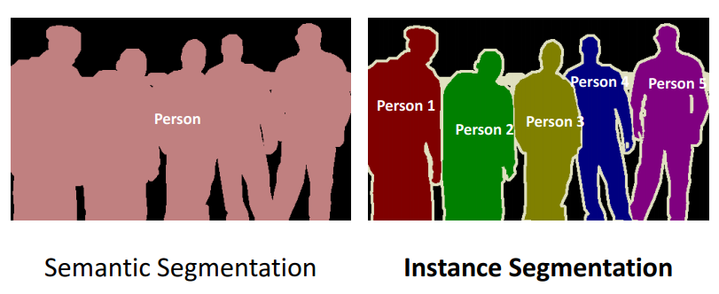
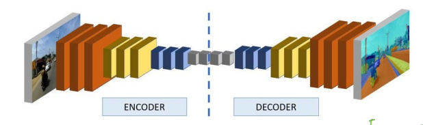
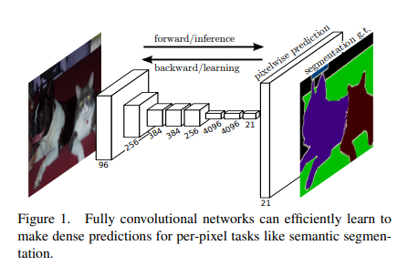
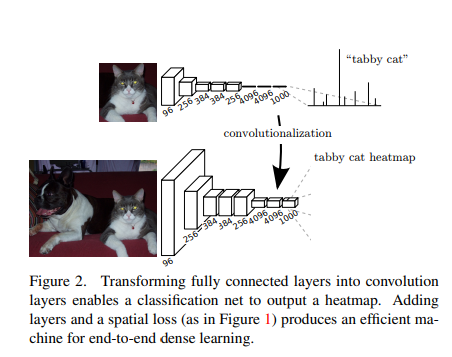
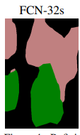
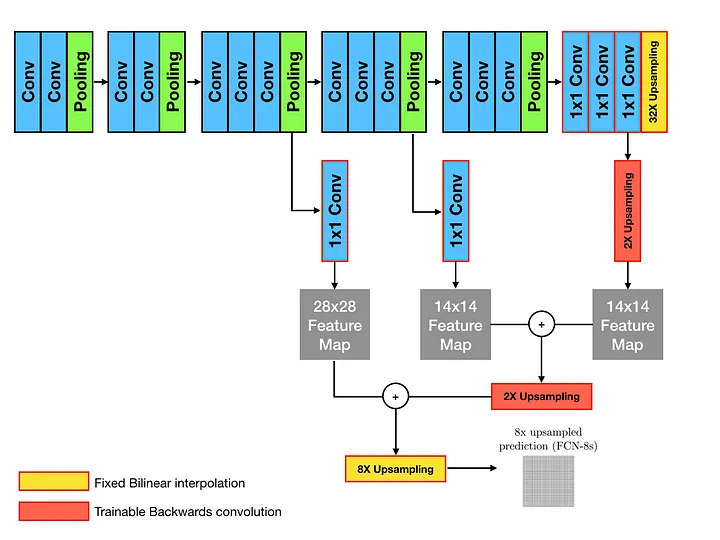

FCN(Fully Convolution Network)
semantic segmantation의 초석을 닦은 연구
segmantation
=(1)semantic segmantaion(2)instance segmantation

- biomedical image에서는 semantic segmentation을 사용 ex) 의료 영상
FCN structure

- end-to-end방식
- pixel 단위로 클래스 예측 (from supervised pre-trained)
- encoder - decoder 형태
- 유명한 CNN 아키텍쳐의 특징을 갖고 있음
encoder: 차원 축소 -> Feature map 획득

1 encoder 부분(Downsampling)에서는 3 * 3 Conv-> 3 * 3 Conv -> pooling을 진행하는 구조
2 image segmantation은 기본적으로 CNN의 구조를 따라감. 단, CNN 구조의 마지막에 있는 FC layer는 갖고 오지 않음

- FC layer를 사용하게 되면 위치정보가 소실됨
->Conv layer 사용 - Conv Layer는
1x1 Conv layer(Google Net)를 사용하여 채널의 수를 조절 - 채널의 수는 객체의 수와 동일하게 맞춤
3 [\(H\), \(W\)] 이미지가 [conv - conv - pooling] (VGG의 구조)를 n번 통과한다면 이미지의 크기는 [\(H/2^n\), \(W/2^n\)]가 되게 됨

- 이를 다시 말하면 픽셀 하나가 \(2^n\)개의 픽셀의 정보를 갖고 있다는 뜻
->위치정보를 애매하게 알게 됨 - upsampling 과정에서 대략적인(?) segmantation이 진행됨
- 이를 보완하기 위해서
skip connection(ResNet)을 이용
decoder: Feature map을 upsampling 하여 필요한 정보를 학습

1x1 Conv를 사용해 채널수를 맞추어Upsampling한Feature map과 합침- 위 과정을 지난
Feature map을 다시 한번Upsampling한 후 Feature map과 합침 - 마지막에 몇 배로
Upsampling을 했는지에 따라서 이름이 바뀜ex)위의 그림은 마지막에 8배로 Upsampling을 했으므로FCN-8s